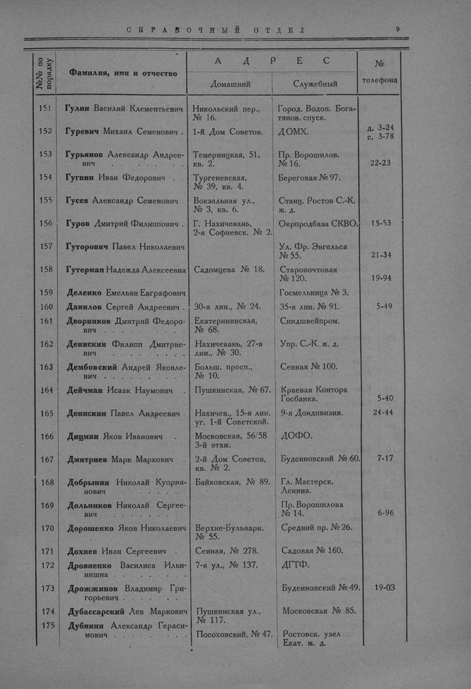

Лист источника 57
Скан

Распознанный текст
СПРАВОЧНЫЙ ОТДЕЛ 9
№№ по порядку Фамилия, имя и отчество АДРЕС № телефона
Домашний Служебный
151 Гулин Василий Клементьевич Никольский пер., № 16. Город. Водоп. Бога- тянов. спуск.
152 Гуревич Михаил Семенович 1-й Дом Советов. ДОМХ. д. 3-24 с. 3-78
153 Гурьянов Александр Андрее- вич Темерницкая, 51, кв. 2. Пр. Ворошилов. № 16. 22-23
154 Гугнин Иван Федорович Тургеневская, № 39, кв. 4. Береговая № 97.
155 Гусев Александр Семенович Вокзальная ул., № 3, кв. 6. Станц. Ростов С.-К. ж. д.
156 Гуров Дмитрий Филиппович Г. Нахичевань, 2-я Софиевск. № 2. Окрпродбаза СКВО. 15-53
157 Гуторович Павел Николаевич Ул. Фр. Энгельса № 55. 21-34
158 Гутерман Надежда Алексеевна Садомцева № 18. Старопочтовая № 120. 19-94
159 Деденко Емельян Евграфович Госмельница № 3.
160 Данилов Сергей Андреевич 30-я лин., № 24. 35-я лин. № 91. 5-49
161 Дворников Дмитрий Федоро- вич Екатерининская, № 68. Синдшвейпром.
162 Денискин Филипп Дмитрие- вич Нахичевань, 27-я лин., № 30. Упр. С.-К. ж. д.
163 Дембовский Андрей Яковле- вич Больш. просп., № 10. Сенная № 100.
164 Дейчман Исаак Наумович Пушкинская, № 67. Краевая Контора Госбанка. 5-40
165 Денискин Павел Андреевич Нахичев., 15-я лин. уг. 1-й Советской. 9-я Дондивизия. 24-44
166 Дицман Яков Иванович Московская, 56/58 3-й этаж. ДОФО.
167 Дмитриев Марк Маркович 2-й Дом Советов, кв. № 2. Буденновский № 60. 7-17
168 Добрынин Николай Куприя- нович Байковская, № 89. Гл. Мастерск. Ленина.
169 Дольников Николай Сергее- вич Пр. Ворошилова № 14. 6-96
170 Дорошенко Яков Николаевич Верхне-Бульварн. № 55. Средний пр. № 26.
171 Дохнев Иван Сергеевич Сенная, № 278. Садовая № 160.
172 Дровненко Василиса Ильи- нишна 7-я ул., № 137. ДГТФ.
173 Дрожжинов Владимир Гри- горьевич Буденновский № 49. 19-03
174 Дубассарский Лев Маркович Пушкинская ул., № 117. Московская № 85.
175 Дубинин Александр Гераси- мович Посоховский, № 47. Ростовск. узел Екат. ж. д.